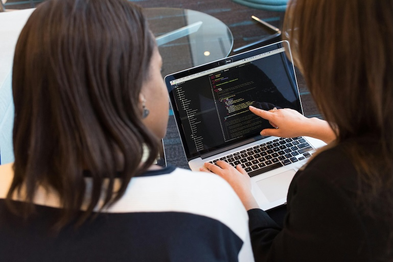

 <!-- <section class="tab-section-portfolio">
          <div class="tab-portfolio">
            <button class="tablinks-portfolio" onclick="openCity(event, 'StrangeTerrariums')" id="defaultOpen">Strange Terrariums</button>
            <button class="tablinks-portfolio" onclick="openCity(event, 'DavidBee')">David Bee</button>
            <button class="tablinks-portfolio" onclick="openCity(event, 'Web Accessibility')">Accessibility</button>
          </div>
          <section id="StrangeTerrariums" class="tabcontent-portfolio web">
            <span>UX Design | Web Development (HTML, CSS, JavaScript) | Form Services*</span>
            <h3>Strange Terrariums</h3>
            <article>
              
              <a href="">Go On Tour</a>
              <p>Explore beautiful terrariums and ease your soul with a local Philly terrarium business.
                Are you in Philly? Do you want to care for beautiful plants? Have an event want some 
                gorgeous natural decor? Check out Strange Terrariums.
              </p>
            </article>
          </section>

          <section id="DavidBee" class="tabcontent-portfolio">
            <h3>David Bee</h3>
            <article>
              
              <a href="">Explore It!</a>
            </article>
          </section>

          <article id="Web Accessibility" class="tabcontent-portfolio">
            <h3>Web Accessibility</h3>
            <ul>
              <li>Semantic HTML for your clients/customers who use Screen Readers</li>
              <li>Audits of colors on website, so that content is legible for all client/users</li>
              <li>Small image files, low amount of javascript code, shrunken video files for all internet speeds </li>
            </ul>
          </article>
        </section>
      </section> -->